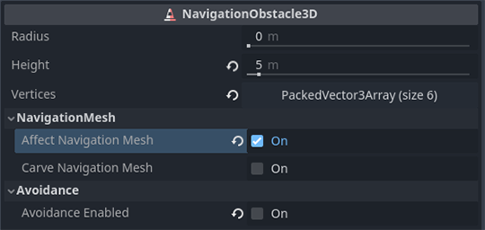

Sử dụng NavigationObstacle
Phiên bản 2D và 3D của node NavigationObstacle lần lượt là NavigationObstacle2D và NavigationObstacle3D.
Navigation obstacle có hai mục đích: chúng có thể ảnh hưởng đến cả việc bake navigation mesh lẫn việc né tránh (avoidance) của agent.
Khi bật
affect_navigation_mesh, obstacle sẽ ảnh hưởng đến navigation mesh khi bake.Với
avoidance_enabled, obstacle sẽ ảnh hưởng đến các agent có dùng avoidance.
Mẹo
Avoidance được bật theo mặc định. Nếu obstacle không được dùng cho avoidance, hãy tắt enabled_avoidance để tiết kiệm hiệu năng.
Obstacle và navigation mesh

Navigation obstacle ảnh hưởng đến việc bake navigation mesh.
Khi bake navigation mesh, obstacle có thể được dùng để loại bỏ những phần của mọi hình học nguồn khác nằm bên trong shape của obstacle.
Điều này có thể được dùng để ngăn navigation mesh được bake ở những nơi không mong muốn, ví dụ bên trong hình học "đặc" như tường dày hoặc trên đỉnh những hình học khác không nên tính vào gameplay như mái nhà.

Navigation obstacle loại bỏ navigation mesh không mong muốn.
Obstacle không thêm hình học trong quá trình bake, nó chỉ loại bỏ hình học. Nó làm điều này bằng cách vô hiệu hóa mọi ô (voxel) chứa hình học nguồn đã raster hóa nằm trong shape của obstacle. Do đó, hiệu quả và độ chi tiết shape của nó bị giới hạn bởi độ phân giải ô mà quá trình bake sử dụng.
Để biết thêm chi tiết về việc bake navigation mesh, xem Sử dụng navigation mesh.

Thuộc tính affect_navigation_mesh khiến obstacle tham gia vào việc bake navigation mesh. Nó sẽ được parse hoặc không giống như mọi đối tượng node khác trong quá trình bake navigation mesh.
Thuộc tính carve_navigation_mesh khiến shape không bị ảnh hưởng bởi các offset của việc bake, ví dụ offset do agent_radius của navigation mesh thêm vào. Về cơ bản, nó hoạt động như một khuôn cắt (stencil) và cắt vào bề mặt navigation mesh đã được offset. Nó vẫn bị ảnh hưởng bởi các bước hậu xử lý tiếp theo của quá trình bake như đơn giản hóa cạnh.
Shape và vị trí của obstacle được xác định bởi các thuộc tính height và vertices, cùng với global_position của obstacle. Giá trị trục y của mọi Vector3 dùng cho các đỉnh đều bị bỏ qua vì obstacle được chiếu lên một mặt phẳng nằm ngang.
Khi bake navigation mesh bằng script, obstacle có thể được thêm theo thủ tục dưới dạng vật cản được chiếu (projected obstruction). Obstacle không tham gia vào việc parse hình học nguồn nên chỉ cần thêm chúng ngay trước khi bake là đủ.
var obstacle_outline = PackedVector2Array([
Vector2(-50, -50),
Vector2(50, -50),
Vector2(50, 50),
Vector2(-50, 50)
])
var navigation_mesh = NavigationPolygon.new()
var source_geometry = NavigationMeshSourceGeometryData2D.new()
NavigationServer2D.parse_source_geometry_data(navigation_mesh, source_geometry, $MyTestRootNode)
var obstacle_carve: bool = true
source_geometry.add_projected_obstruction(obstacle_outline, obstacle_carve)
NavigationServer2D.bake_from_source_geometry_data(navigation_mesh, source_geometry)
Vector2[] obstacleOutline
[
new Vector2(-50, -50),
new Vector2(50, -50),
new Vector2(50, 50),
new Vector2(-50, 50),
];
var navigationMesh = new NavigationPolygon();
var sourceGeometry = new NavigationMeshSourceGeometryData2D();
NavigationServer2D.ParseSourceGeometryData(navigationMesh, sourceGeometry, GetNode<Node2D>("MyTestRootNode"));
bool obstacleCarve = true;
sourceGeometry.AddProjectedObstruction(obstacleOutline, obstacleCarve);
NavigationServer2D.BakeFromSourceGeometryData(navigationMesh, sourceGeometry);
var obstacle_outline = PackedVector3Array([
Vector3(-5, 0, -5),
Vector3(5, 0, -5),
Vector3(5, 0, 5),
Vector3(-5, 0, 5)
])
var navigation_mesh = NavigationMesh.new()
var source_geometry = NavigationMeshSourceGeometryData3D.new()
NavigationServer3D.parse_source_geometry_data(navigation_mesh, source_geometry, $MyTestRootNode)
var obstacle_elevation: float = $MyTestObstacleNode.global_position.y
var obstacle_height: float = 50.0
var obstacle_carve: bool = true
source_geometry.add_projected_obstruction(obstacle_outline, obstacle_elevation, obstacle_height, obstacle_carve)
NavigationServer3D.bake_from_source_geometry_data(navigation_mesh, source_geometry)
Vector3[] obstacleOutline =
[
new Vector3(-5, 0, -5),
new Vector3(5, 0, -5),
new Vector3(5, 0, 5),
new Vector3(-5, 0, 5),
];
var navigationMesh = new NavigationMesh();
var sourceGeometry = new NavigationMeshSourceGeometryData3D();
NavigationServer3D.ParseSourceGeometryData(navigationMesh, sourceGeometry, GetNode<Node3D>("MyTestRootNode"));
float obstacleElevation = GetNode<Node3D>("MyTestObstacleNode").GlobalPosition.Y;
float obstacleHeight = 50.0f;
bool obstacleCarve = true;
sourceGeometry.AddProjectedObstruction(obstacleOutline, obstacleElevation, obstacleHeight, obstacleCarve);
NavigationServer3D.BakeFromSourceGeometryData(navigationMesh, sourceGeometry);
Obstacle và avoidance của agent
Với avoidance, navigation obstacle có thể được dùng như obstacle tĩnh hoặc động để ảnh hưởng đến các agent được điều khiển bởi avoidance.
Khi dùng ở dạng tĩnh, NavigationObstacle giữ các agent được điều khiển bởi avoidance ở bên ngoài hoặc bên trong một vùng được xác định bằng đa giác.
Khi dùng ở dạng động, NavigationObstacle đẩy các agent được điều khiển bởi avoidance ra xa trong một bán kính xung quanh chúng.
Avoidance obstacle tĩnh
Một avoidance obstacle được coi là tĩnh khi thuộc tính vertices của nó chứa một mảng vị trí đường viền tạo thành một đa giác.

Obstacle tĩnh được vẽ trong trình chỉnh sửa để chặn hoặc giữ các navigation agent.
Obstacle tĩnh hoạt động như ranh giới cứng không-được-vượt-qua đối với các agent dùng avoidance, ví dụ tương tự va chạm vật lý nhưng dành cho avoidance.
Obstacle tĩnh xác định ranh giới bằng một mảng
vertices(vị trí) của đường viền, và trong trường hợp 3D có thêm thuộc tínhheight.Obstacle tĩnh chỉ hoạt động với các agent dùng chế độ avoidance 2D.
Obstacle tĩnh xác định thông qua thứ tự cuộn (winding order) của các đỉnh xem agent bị đẩy ra hay bị hút vào.
Obstacle tĩnh không thể thay đổi vị trí. Chúng chỉ có thể được dịch chuyển tức thời (warp) đến vị trí mới và được xây dựng lại từ đầu. Do đó, obstacle tĩnh không phù hợp với những trường hợp vị trí thay đổi mỗi frame, vì việc xây dựng lại liên tục có chi phí hiệu năng cao.
Agent không thể dự đoán được các obstacle tĩnh bị warp sang vị trí khác. Điều này tạo ra nguy cơ agent bị kẹt nếu một obstacle tĩnh bị warp đè lên agent.
Khi dùng avoidance 2D trong 3D, trục y của các đỉnh Vector3 bị bỏ qua. Thay vào đó, vị trí trục y toàn cục của obstacle được dùng làm mức độ cao. Agent sẽ bỏ qua các obstacle tĩnh trong 3D nằm bên dưới hoặc bên trên chúng. Điều này được xác định tự động dựa trên vị trí trục y toàn cục của cả obstacle và agent làm mức độ cao, cũng như các thuộc tính chiều cao tương ứng của chúng.
Avoidance obstacle động
Một avoidance obstacle được coi là động khi thuộc tính radius của nó lớn hơn 0.
Obstacle động hoạt động như một đối tượng mềm kiểu "làm-ơn-tránh-xa-tôi" đối với các agent dùng avoidance, ví dụ tương tự cách chúng tránh các agent khác.
Obstacle động xác định ranh giới bằng một
radiusduy nhất cho hình tròn 2D, hoặc hình cầu trong trường hợp avoidance 3D.Obstacle động có thể thay đổi vị trí mỗi frame mà không tốn thêm chi phí hiệu năng.
Agent có thể dự đoán chuyển động của các obstacle động có đặt vận tốc.
Obstacle động không phải là cách đáng tin cậy để giới hạn agent trong những không gian đông đúc hoặc chật hẹp.
Mặc dù cả thuộc tính tĩnh và động đều có thể cùng hoạt động trên một obstacle, điều này không được khuyến khích vì lý do hiệu năng. Lý tưởng nhất là khi obstacle đang di chuyển, các đỉnh tĩnh được loại bỏ và thay vào đó kích hoạt bán kính. Khi obstacle đến vị trí cuối cùng mới, nó nên tăng dần bán kính để đẩy mọi agent khác ra xa. Khi đã tạo đủ không gian an toàn quanh obstacle, nó nên thêm lại các đỉnh tĩnh và bỏ bán kính. Điều này giúp tránh việc agent bị kẹt trong obstacle tĩnh đột ngột xuất hiện khi ranh giới tĩnh được xây dựng lại hoàn tất.
Tương tự agent, obstacle có thể sử dụng bitmask avoidance_layers. Mọi agent có bit trùng khớp trên avoidance mask của chính chúng sẽ né tránh obstacle.
Obstacle tạo theo thủ tục
Bạn có thể tạo obstacle mới trong script mà không cần Node bằng cách dùng trực tiếp NavigationServer.
Obstacle được tạo bằng script cần ít nhất một map và một position. Để dùng ở dạng động, cần có radius. Để dùng ở dạng tĩnh, cần có một mảng vertices.
# create a new "obstacle" and place it on the default navigation map.
var new_obstacle_rid: RID = NavigationServer2D.obstacle_create()
var default_map_rid: RID = get_world_2d().get_navigation_map()
NavigationServer2D.obstacle_set_map(new_obstacle_rid, default_map_rid)
NavigationServer2D.obstacle_set_position(new_obstacle_rid, global_position)
# Use obstacle dynamic by increasing radius above zero.
NavigationServer2D.obstacle_set_radius(new_obstacle_rid, 5.0)
# Use obstacle static by adding a square that pushes agents out.
var outline = PackedVector2Array([Vector2(-100, -100), Vector2(100, -100), Vector2(100, 100), Vector2(-100, 100)])
NavigationServer2D.obstacle_set_vertices(new_obstacle_rid, outline)
# Enable the obstacle.
NavigationServer2D.obstacle_set_avoidance_enabled(new_obstacle_rid, true)
// Create a new "obstacle" and place it on the default navigation map.
Rid newObstacleRid = NavigationServer2D.ObstacleCreate();
Rid defaultMapRid = GetWorld2D().NavigationMap;
NavigationServer2D.ObstacleSetMap(newObstacleRid, defaultMapRid);
NavigationServer2D.ObstacleSetPosition(newObstacleRid, GlobalPosition);
// Use obstacle dynamic by increasing radius above zero.
NavigationServer2D.ObstacleSetRadius(newObstacleRid, 5.0f);
// Use obstacle static by adding a square that pushes agents out.
Vector2[] outline =
[
new Vector2(-100, -100),
new Vector2(100, -100),
new Vector2(100, 100),
new Vector2(-100, 100),
];
NavigationServer2D.ObstacleSetVertices(newObstacleRid, outline);
// Enable the obstacle.
NavigationServer2D.ObstacleSetAvoidanceEnabled(newObstacleRid, true);
# Create a new "obstacle" and place it on the default navigation map.
var new_obstacle_rid: RID = NavigationServer3D.obstacle_create()
var default_map_rid: RID = get_world_3d().get_navigation_map()
NavigationServer3D.obstacle_set_map(new_obstacle_rid, default_map_rid)
NavigationServer3D.obstacle_set_position(new_obstacle_rid, global_position)
# Use obstacle dynamic by increasing radius above zero.
NavigationServer3D.obstacle_set_radius(new_obstacle_rid, 0.5)
# Use obstacle static by adding a square that pushes agents out.
var outline = PackedVector3Array([Vector3(-5, 0, -5), Vector3(5, 0, -5), Vector3(5, 0, 5), Vector3(-5, 0, 5)])
NavigationServer3D.obstacle_set_vertices(new_obstacle_rid, outline)
# Set the obstacle height on the y-axis.
NavigationServer3D.obstacle_set_height(new_obstacle_rid, 1.0)
# Enable the obstacle.
NavigationServer3D.obstacle_set_avoidance_enabled(new_obstacle_rid, true)
// Create a new "obstacle" and place it on the default navigation map.
Rid newObstacleRid = NavigationServer3D.ObstacleCreate();
Rid defaultMapRid = GetWorld3D().NavigationMap;
NavigationServer3D.ObstacleSetMap(newObstacleRid, defaultMapRid);
NavigationServer3D.ObstacleSetPosition(newObstacleRid, GlobalPosition);
// Use obstacle dynamic by increasing radius above zero.
NavigationServer3D.ObstacleSetRadius(newObstacleRid, 5.0f);
// Use obstacle static by adding a square that pushes agents out.
Vector3[] outline =
[
new Vector3(-5, 0, -5),
new Vector3(5, 0, -5),
new Vector3(5, 0, 5),
new Vector3(-5, 0, 5),
];
NavigationServer3D.ObstacleSetVertices(newObstacleRid, outline);
// Set the obstacle height on the y-axis.
NavigationServer3D.ObstacleSetHeight(newObstacleRid, 1.0f);
// Enable the obstacle.
NavigationServer3D.ObstacleSetAvoidanceEnabled(newObstacleRid, true);